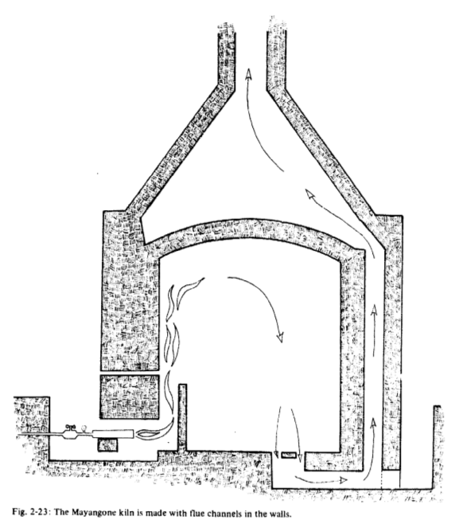

Qu'est-ce que le Batchrocket ?
Plan
Introduction
Le Batchrocket (encore appelé Batchbox ou BBox) a principalement été développé par Peter van den Berg depuis 2012 avec la collaboration des members du forum US sur les Rocket Stoves.
L'association UZUME travaille depuis fin 2015 sur des poêles de masse utilisant le Batchrocket. Nous poursuivons le développement des Batchrockets et nous diffusons la technologie par le biais de stages d'auto-construction, d'un manuel d'auto-construction que nous écrivons, et d'articles internet comme ce site ou le site batchrocket.eu/fr/ qu'un de nos membres a traduit en français.
Les origines
-

- 
Figures : À gauche, four à briques fonctionnant sous le principe des cloches; à droite, four à briques de type Mayangone. Source : The Self-Reliant Potter: Refractories and Kilns, Henrik Norsker, 1987, p. 50 et 54.
Les limites du Rocket Stove
Un rendement excellent..
Le succès des Rocket Stoves et sûrement lié à l'excellente qualité de la combustion par rapport à leur simplicité de construction. Ci-dessous se trouve le compte rendu de l'analyse de combustion d'un Rocket Stove classique que nous avons construit d'après les plans de Peter van den Berg. Le rendement total (combustion x récupération) moyen est de 95%, ce qui est excellent. Le taux de monoxyde de carbone est extrèmement faible sur la plus grande partie de la flambée. En moyenne, le Rocket Stove émet 807 ppm de CO, ce qui indique une combustion de très bonne qualité.
À titre de comparaison, le label Flamme Verte demande un rendement supérieur à 70% et des émissions de CO inférieures à 3000 ppm en pleine flambée (à 13% d'O2). Or les valeurs d'émission de CO sont toujours beaucoup plus faibles en pleine flambée qu'en moyenne, parce que les phases où le feu est au ralenti polluent plus. Les Rocket Stoves bien conçus sont donc beaucoup plus performants que les poêles et inserts 5 étoiles labélisés Flamme Verte.

Graphique : Résultats de l'analyse de combustion d'un rocket stove de 180 mm sur une flambée à pleine puissance.Source : Analyse effectuée avec le Testo 230-LL en Août 2016
Pour ce test, 6 kg de bois sec (~15% d'humidité) ont été brûlés. Le fagot était composé de 1 kg de petit bois et 5 kg de bois fendu à un diamètre de 5-10 cm. La flambée a duré un peu moins de 2h avec une surveillance régulière pour rajouter du bois au fur et à mesure qu'il se consommait. La puissance d'un Rocket Stove de 180 mm de diamètre interne est d'environ 900 W en considérant une flambée d'environ 2h par jour.
À titre de comparaison, un Batchrocket de 180 mm de diamètre interne a une puissance d'environ 3200 W en considérant une flambée de durée équivalente. Le Batchrocket est donc 3,5 fois plus puissant qu'un Rocket stove. De plus, la flambée d'un Batchrocket ne nécessite pas d'intervention de l'utilisateur : à chaque chargement le foyer est complètement rempli avec du bois et il ne faut pas en rajouter pendant la flambée. Et en fonction du tirage, on peut utiliser des bûches de taille classique : pas besoin de refendre le bois comme pour les Rocket Stoves.

Graphique : Résultats de l'analyse de combustion d'un rocket stove de 180 mm sur une flambée au ralenti.Source : Analyse effectuée avec le Testo 230-LL en Août 2016
Au ralenti, les résultats sont moins flatteurs : CO moyen de 1435 ppm et rendement total moyen de 79%.
Le Batchrocket
Le Batchrocket (encore appelé Batchbox ou BBox) : vue du feu; pas besoin de s'occuper du feu pendant la flambée; rendement similaire; besoin de plus de tirage; beaucoup plus puissant; feu dans une enceinte close; possible d'utiliser du gros bois

Graphique : Résultats de l'analyse de combustion d'un batchrocket de 150 mm.Source : Analyse effectuée par Peter van den Berg, Fevrier 2016, http://batchrocket.eu/fr/plans#canalsol
Les moyennes de cette flambée sont: O2 13%, efficacité 95.2%, CO 282 ppm, Tr 66.4 C